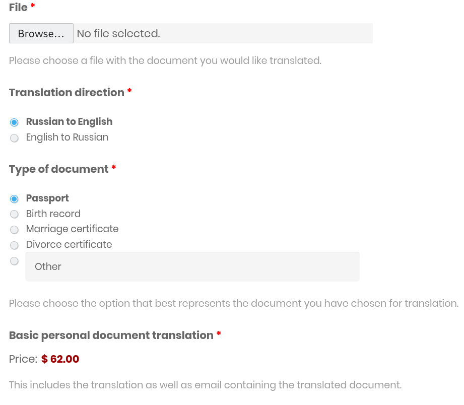
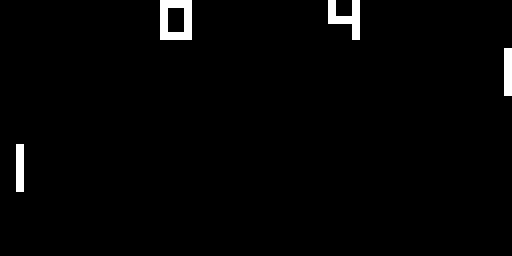

Mariusz Skoneczko
Hey! I am a software engineer and all-round nerd.


Featured projects
-
RTSAustralia - Bystro
Optimises business processes of NAATI accredited Russian Translation Services Australia by automatically prefilling name preferences, taking payment instantly online via Stripe, and generating a professional PDF document for customers.
-
Chipbox
Educational exercise in making an accurate, "quirk compatible" emulator for CHIP-8 in Standard C utilising the Test-Driven Development approach.